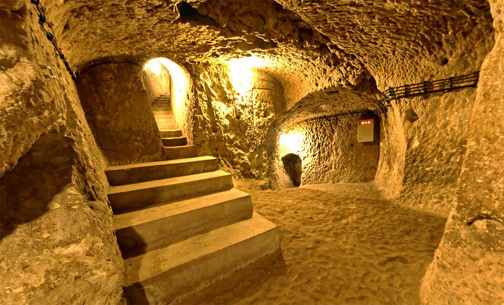

Derinkuyu Yeraltı Şehri
Yerin altında sekiz kattan oluşan Derinkuyu Yeraltı Şehri, aralarında en popüler olanı. Zamanında aynı anda 50.000 kişinin yaşayabildiği yeraltı şehrindeki yerleşik yaşamın, Asurlar’a dayandığı düşünülüyor. Kaymaklı’dan farklı olarak burada misyonerler okulu, günah çıkartma yeri ve vaftiz havuzu bulunuyor. Derinkuyu ismini, içindeki kuyulardan alıyor. Bu kuyular, yerin 60 metre aşağısına inerek, doğal bir havalandırma görevi görüyor. Derinkuyu’nun altında 400-500 adet yer altı şehri daha varmış ve bunlara ait 600 adet iniş çıkış kapısı var. Bu kapılar şu an halen oturulmakta olan evlerin içerisinde olduğundan yeraltı şehrinin bazı kısımları halk tarafından depo olarak kullanılıyor. Derinkuyu Yeraltı Şehri, Nevşehir merkeze 30 kilometre mesafedeki Derinkuyu ilçesinde bulunuyor.
